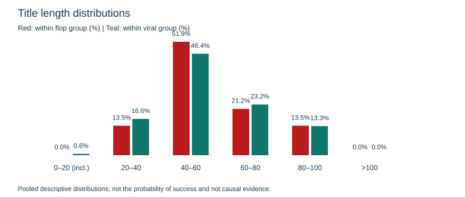
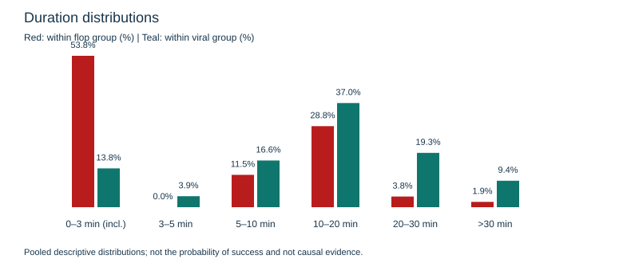

Fixed snapshot: 2026-10-13T05:51:52.429481+00:00. Qualified videos: 1165; channels: 12; flops: 52; virals: 181.
Each colour sums to 100% within its own outcome group. This is NOT the chance of a video becoming viral. These pooled charts do not control channel, topic or video-age differences.


Duration bins are descriptive, not confirmed Shorts/live categories. Unknown-language videos are excluded; full policy and limitations are recorded in manifest.json.